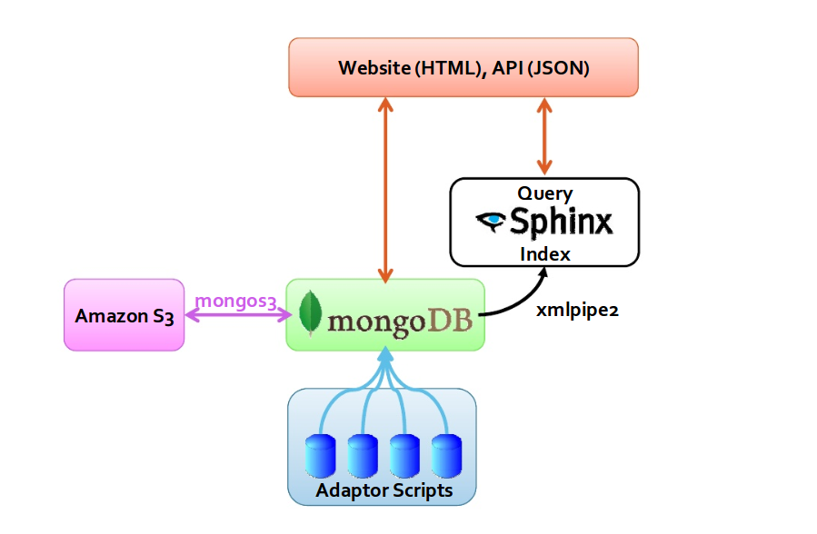

sphinx search introduction
简介
Sphinx是由俄罗斯人 Andrew Aksyonoff 开发的一个全文检索引擎。意图为其他应 用提供高速、低空间占用、高结果 相关度的全文搜索功能。Sphinx 可以非常容 易的与 SQL 数据库和脚本语言集成。当前系统内置 MySQL 和 PostgreSQL 数据 库数据源的支持，也支持从标准输入读取特定格式 的XML数据。通过修改源代码， 用户可以自行增加新的数据源（例如：其他类型的 DBMS 的原生支持）
Sphinx的特性：
- 高速的建立索引(在当代CPU上，峰值性能可达到10 MB/秒);
- 高性能的搜索(在2 – 4GB 的文本数据上，平均每次检索响应时间小于0.1秒);
- 可处理海量数据(目前已知可以处理超过100 GB的文本数据, 在单一CPU的系统上可 处理100 M 文档);
- 提供了优秀的相关度算法，基于短语相似度和统计（BM25）的复合Ranking方法;
- 支持分布式搜索;
- 支持短语搜索
- 提供文档摘要生成
- 可作为 MySQL 的存储引擎提供搜索服务;
- 支持布尔、短语、词语相似度等多种检索模式;
- 文档支持多个全文检索字段(最大不超过32个);
- 文档支持多个额外的属性信息(例如：分组信息，时间戳等);
- 支持断词;
而我们一般用 Sphinx 来解决数据库全文检索效率低下以及 like "%test%" 慢查询等问题。
编译安装
- 下载Sphinx 2.0.5
$ wget http://sphinxsearch.com/files/sphinx-2.0.5-release.tar.gz
解压源码包：
$ tar zxvf sphinx-2.0.5-release.tar.gz $ cd sphinx-2.0.5-release
- 执行configure配置程序:
$ ./configure [options]
有一些参数可以在配置的时候指定，主要如下:
- prefix, 指定sphinx安装到系统的那个位置; 例如 —prefix=/usr/local/sphinx
- with-mysql, mysql 的安装目录，指定如果自动侦查 mysql 的相关库文件失败后到哪个目录查找
- with-pgsql, 同上，用于 pgsql
完整的配置命令如下：
./configure --prefix=/usr/local/sphinx --with-mysql=/usr/local/mysql
- 编译
$ make
- 安装
$ make install
如果编译中没有产生错误，这个步骤应该不会遇到问题。如果完成后未正确安装， 就要回去找make过程中遇到的错误了。
- 运行测试
$ cd /usr/local/sphinx/etc $ cp sphinx.conf.dist sphinx.conf $ emacs sphinx.conf
这里，sphinx提供了一个简单的例子，基本步骤是先将 /sphinx/etc 下面的 sphinx.conf.dist 重命名为 sphinx.conf, 然后修改 sphinx.conf 中的配置，主要是修改你服务器上面的 mysql 的用户名、密码、数据库名等。修改的位 置是 sphinx.conf 的 source src1 下面几行。
$ mysql -u test < /usr/local/sphinx/etc/example.sql
这里是导入 sphinx 准备的测试数据，我们把数据导入到 mysql 的 test 数据库中。 当然，这里的数据库要和你上面的配置文件（sphinx.conf）中指定的 sql_db 值 相同。注意，运行这个命令的话，如果你的 mysql 命令没有加入到环境变量中， 就需要用完整路径，同时可能需要输入密码。比如你的 mysql 安装在 /usr/local/mysql 目录中，root 账户的密码是 xxxxxx，那么命令应该调整为：
$ /usr/local/mysql/bin/mysql -uroot -pxxxxxx test < /usr/local/sphinx/etc/example.sql $ cd /usr/local/sphinx/etc $ /usr/local/sphinx/bin/indexer --all
这个命令是建立索引，当然数据基础是刚刚导入的example.sql的数据，如果这 里出错，最大的可能是你的 sphinx.conf 中的数据库配置错了，你需要回去检查 并修正。但是，还有可能出现 sphinx 必须的库文件无法找到，例如出现以下错误：
/usr/local/sphinx/bin/indexer: error while loading shared libraries: libmysqlclient.so.16: cannot open shared object file: No such file or directory
这主要是因为你安装了一些库后，没有能够配置相应的环境变量。你可以通过建 立连接的方式修正这个问题，运行如下命令：
ln -s /usr/local/mysql/lib/libmysqlclient.so.15 /usr/lib/libmysqlclient.so.15
这里我假设你相应的软件包安装在 /usr/local/xxx 目录下，如果你不是安装在相应目录下，你就需要使用你自己的路径。
$ cd /usr/local/sphinx/etc $ /usr/local/sphinx/bin/search test
上面的命令是搜索测试，测试的关键词就是 test 了，如果成功的话，你应该看到搜到的结果，出现字串“index 'test1': query 'test ': returned 3 matches of 3 total in 0.000 sec”，后面跟的是结果表示成功了。
$ cd /usr/local/sphinx/etc $ /usr/local/sphinx/bin/searchd
索引
Sphinx 提供两种索引方式，一种是普通索引，另一种是实时索引。两种索引方式带来了不同的部署和使用方式。
普通索引（Plain Index）
如上面的介绍，就是用 Sphinx 搭建的一套普通索引，这种索引无法达到实时索 引的效果，退而求其次，只能通过定时重建索引的方式达到准实时的效果，而且 一旦索引数据量增大，索引重建所需的时间越来越长，实时效果会越来越差。所 以此类索引要达到实准时效果的方案是使用 base + delta 结构，每天重建 base 索引，每5分钟重建 delta 索引。更有甚者使用 base + day + delta 结构。如下图所示：
source base
{
type = mysql
sql_host = 127.0.0.1
sql_user = root
sql_pass =
sql_db = test
sql_port = 8686
sql_query_pre = SET NAMES utf8
sql_query_pre = REPLACE INTO sph_counter SELECT 1, MAX(id) FROM
invoice_main;
sql_query = SELECT id, uid, ... FROM table;
sql_attr_timestamp = addtime
sql_attr_timestamp = modtime
}
index base
{
source = base
path = /path/to/var/data/base
docinfo = extern
enable_star = 1
min_infix_len = 3
charset_type = utf-8
# 中文一元切词
charset_table = 0..9, A..Z->a..z, _, a..z,
U+410..U+42F->U+430..U+44F, U+430..U+44F
ngram_len = 1
ngram_chars = U+3000..U+2FA1F
}
source delta : base
{
sql_query_pre = SET NAMES utf8
sql_query = SELECT id, uid, ... FROM table WHERE id > ( SELECT
max_doc_id FROM sph_counter WHERE counter_id = 1)
}
index delta : base
{
source = delta
path = /path/to/var/data/delta
}
实时索引（Realtime Index）
简介
Sphinx实时索引在版本 1.10-bita 被引入的。 实时索引也是一种索引类型，也需要在 sphinx.conf 文件中声明。不需要并忽略数据来源，需要明确地列举所有文本域，不只是属性。
转换实时索引
通常情况下，我们已经有数据源了，这个时候如何把现有数据转换成实时索引数 据呢？ Sphinx 实现了一种 ATTACH 机制可以做到这一点，如下所示：
source orig
{
type = mysql
sql_host = localhost
sql_user = root
sql_pass =
sql_db = test
sql_port = 3306 # optional, default is 3306
sql_query = \
SELECT id, group_id, UNIX_TIMESTAMP(date_added) AS date_added, title, content \
FROM documents
sql_attr_uint = group_id
sql_attr_timestamp = date_added
sql_query_info = SELECT * FROM documents WHERE id=$id
}
index orig
{
source = orig
path = idx/orig
docinfo = extern
charset_type = sbcs
}
index rtindex
{
type = rt
rt_mem_limit = 32M
path = idx/rtindex
charset_type = utf-8
rt_field = title
rt_field = content
rt_attr_uint = group_id
rt_attr_timestamp = date_added
}
source attach
{
type = mysql
sql_host = 127.0.0.1
sql_user =
sql_pass =
sql_db =
sql_port = 9306 # optional, default is 3306
sql_query = select 1 from testrt
sql_query_post = ATTACH INDEX orig TO RTINDEX rtindex
}
index attach
{
source = attach
path = idx/attach
docinfo = extern
charset_type = sbcs
}
操作步骤如下：
- 开启 searchd：
./bin/searchd -c ./etc/sphinx.conf
这里请忽略空索引attach警告。
- 新建 orig 索引：
$ ./bin/indexer -c ./etc/sphinx.conf orig --rotate
- 转换实时索引：
$ ./bin/indexer -c ./etc/sphinx.conf attach
现在来收获成果：
mysql -P9306 -h127.0.0.1 mysql> select * from rtindex;
| id | weight | group_id | date_added |
|
1 2 3 4 |
1 1 1 1 |
1 1 2 2 |
1322419937 1322419937 1322419937 1322419937 |
大功告成，皆大欢喜！
分布式索引
随着索引数据增加和检索次数增加，单机可能无法承受如此大的数据量和检索量， 这个时候我们便会考虑使用分布式索引，这其中也有两种方案可以选用。
下面引用张宴的架构图：
- 索引同步
使用 rsync 之类的工具定时同步索引，随机选择每个节点进行查询，这么做的 好处是可以解决检索量的问题，但并不能解决单机索引数据过大的问题。
- Sphinx 分布式索引
使用 Sphinx 自身的分布式索引，在每个节点上只索引总数据量的一部分（这可 以对数据表的主键取模来实现，如 id MOD 4），然后在 sphinx.conf 中配置分 布式索引，如下：
source base { # ... } index base { # ... } source delta : base { # ... } index delta : base { # ... } index main { type = distributed local = base local = delta agent = 127.0.0.1:9313:main,delta agent = 127.0.0.1:9314:main,delta agent = 127.0.0.1:9315:main,delta # remote agent connection timeout, milliseconds # optional, default is 1000 ms, ie. 1 sec agent_connect_timeout = 1000 # remote agent query timeout, milliseconds # optional, default is 3000 ms, ie. 3 sec agent_query_timeout = 3000 }
XMLPIPE
上面介绍的都是使用 MySQL 数据源的，如果是 MongoDB 当如何处理？ Sphinx 自身集成了XML协议，只要你在标准输出中打印出符合 Sphinx 要求的 XML 那么 Sphinx 就能正确获取数据，并创建索引。

source products
{
type = xmlpipe2
xmlpipe_command = php53 /home/guweigang/work/scripts/exportProducts2Sphinx.php
}
index products
{
source = products
path = /home/guweigang/local/sphinx/var/data/products
docinfo = extern
charset_type = utf-8
charset_table = 0..9, A..Z->a..z, _, a..z, U+410..U+42F->U+430..U+44F, U+430..U+44F
ngram_len = 1
ngram_chars = U+3000..U+2FA1F
}
具体代码可参考http://guweigang.com/blog/2013/12/02/php-xmlpipe2-for-sphinx/